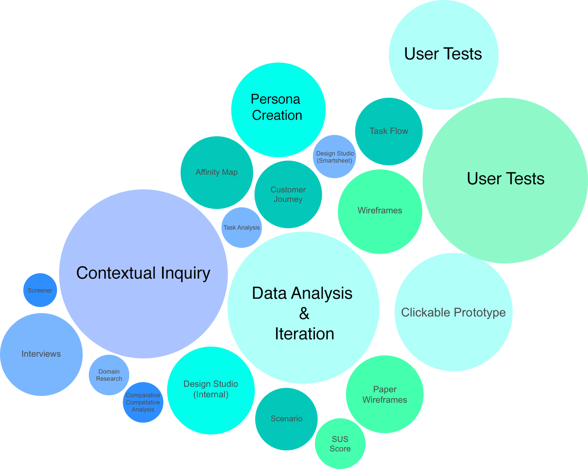
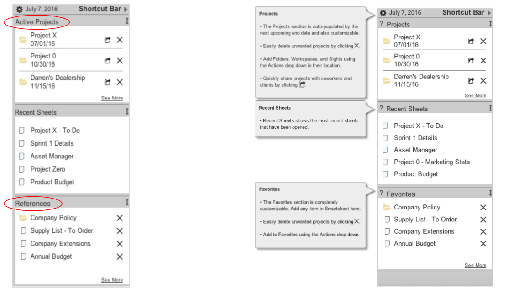

Smartsheet Shortcuts
Customizable navigation that allows power users to quickly access what they need

Opportunity
How can we give power users the ability to expedite their workflow and create organization in a powerful and complex tool?
Solution
The Shortcut Bar is always a click away and populated with the users' most important items. It allows quick navigation through an organized workspace.
Role
I was a collaborator on team of three throughout each stage of the design process. I was primarily responsible for user research, user testing, and stakeholder communications.

Process
Smartsheet is a powerful software as service (SaaS) application for project management and collaboartion. Given the high use levels and resulting tendency towards accumulation, my team's design process was centered around helping users find what they need quickly. We conducted user research in the form of a hybrid user interview and contextual inquiry; we wanted to observe how users interacted with Smartsheet - what shortcuts they created for themselves, how they organized their work and what slowed them down. A large part of the analysis was synthesizing data from from a wide range of users, and then designing an MVP that would serve the power user.
Research
During the research process, our goal was to understand what users appreciate and what frustrates them. I conducted contextual inquiries to learn how power users utilized Smartsheet's existing patterns (like the Home tab) and where they were lacking support. We put the data points into an affinity diagram for analysis.

Key insights:
I want a personalized tool
I want more flexibility in organization
Power users spend a lot of time in Smartsheet. They understand most functions. The overarching painpoint we discovered was slow navigation. Users found it frustrating to click through the tabs that accumulated at the top of their screen. They spent the majority of their time on a fraction of the total items in their account. My team realized we needed to give users a way to get to their desired location, faster.

Once we knew the painpoint our design was addressing, my team conducted several design brainstorming sessions. We led prompted users to draw creative organization / dashboard systems. With many data points creating our foundation, we were then able to move forward with our design of the Shortcut Tab.
We developed our design through multiple iterations, building out a the shell of a customizable slide-out side bar with links to important items. With more feedback from users, we were able to include the functions that users needed most.

Results & Learning
This sprint was the first step into a valuable exploration of shortcuts. During research and testing, we uncovered emergent patterns. With additional research, the Shortcut Bar will be the simplest way for users to have control over their workflow. In just a few iterations, we were able to encourage user learning and make functions more intuitive.
Tools
© Adrienne Kahan 2016